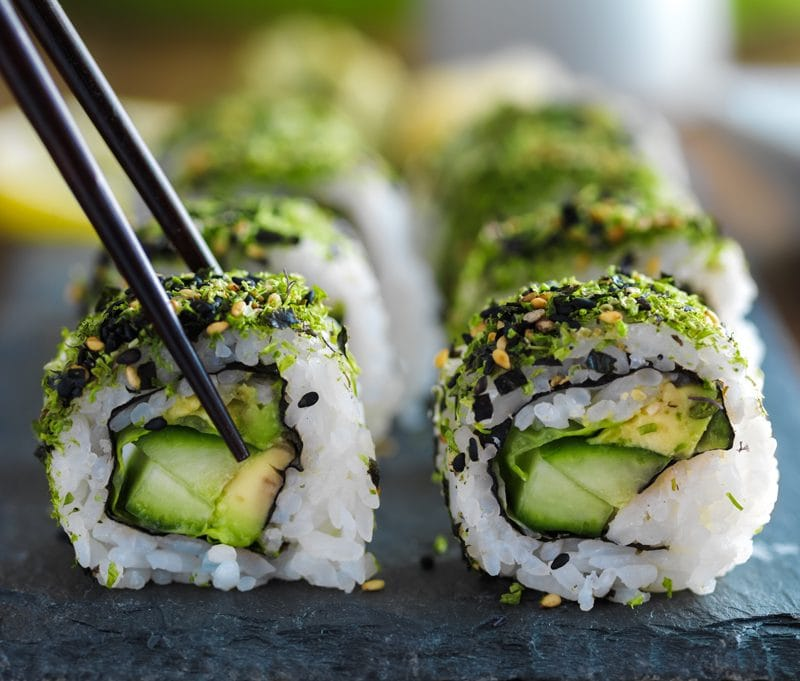

Soy Sauce / Salt Substitutions
 So why do I use soy sauce substitutions and not just the “real thing?” The majority of conventional soy sauces on the market are made with non-organic, genetically modified (GMO) soybeans.
So why do I use soy sauce substitutions and not just the “real thing?” The majority of conventional soy sauces on the market are made with non-organic, genetically modified (GMO) soybeans.
Long term use of unfermented soy-related products has shown an increase in soy allergies, a disruption in proper thyroid function, and an overload of estrogen in the body. That is reason enough for me.
Below I am sharing some common soy sauce substitutions that you may see in the “raw food” ingredient list. Not all are raw. I would rather use a non-raw sauce tthanone that is made from GMO soy. Please select the product that is right for you.
Coconut Aminos
- Natural Soy-Free Sauce
- Raw
- Gluten-free
- Vegan
What is so special about it?
- Coconut Aminos is made from coconut tree sap, which comes right out of the tree so vital, active and alive nutrients, that is only blending with our own sun dried mineral-rich sea salt and aged, without the need for a fermentation booster or added water.
- When the coconut tree is tapped, it produces a highly nutrient-rich “sap” that exudes from the coconut blossoms. This sap is very low glycemic (GI of only 35), is an abundant source of amino acids, minerals, vitamin C, broad-spectrum B vitamins, and has a nearly neutral pH.
How to use it:
- Use Coconut Aminos like soy sauce in dressings, marinades, sautes, and with sushi.
Ingredients:
- Certified Organic Coconut Sap – naturally aged and blended with Sun Dried, Mineral-Rich Sea Salt.

Vegan Sushi made with rice but could use cauliflower rice instead.
Braggs Liquid Amino
- Not raw
- They don’t use chemicals, artificial coloring, alcohol or preservatives.
- Gluten-Free
- Certified NON-GMO
- Made from soybeans
What is so special about it?
- Bragg Liquid Aminos is a Certified NON-GMO liquid protein concentrate, derived from healthy soybeans, which contains Essential and Non-essential Amino Acids. If you use Braggs Liquid Amino in recipes, chances are you won’t need to add salt. Keep this mind so you don’t ruin a recipe with too much of a salty flavor.
How to use Braggs:
- Braggs is wonderful on salads, use dressings, soups, on veggies, and many other items.
Ingredients:
- Bragg Liquid Aminos are made from health-giving, NON-GMO soybeans and purified water.
_________________________________
Organic Gluten Free Tamari Sauce
- No MSG, artificial preservatives
- Not raw
- Fermented
- Comes Gluten-Free
What is so special about it?
- The well-balanced, smooth rich flavor of tamari goes beyond its saltiness and blends so well with so many spices that the salt shaker won’t even be missed; low sodium varieties are also available. Tamari is dark brown in color and usually slightly thicker than regular soy sauce.
- Organic Gluten Free Tamari is made with 100% soybeans and no wheat. It is naturally fermented for up to 6 months.
How to use Tamari
- Use it as a marinade. Reduce sodium levels in your cooking without compromising taste. One teaspoon of Organic Tamari contains one-eighth the sodium as one teaspoon of salt.
Ingredients:
- Water, Organic Soybeans, Salt, Organic Alcohol (to preserve freshness)
_________________________________
Namu Shoyu
- Organic
- Non-GMO
- Considered raw
- Not Gluten-Free
What is so special about it?
- No other soy sauce in America comes close to this 100% organic, non-GMO Nama Shoyu in flavor or quality. It’s the only soy sauce that’s aged for four years in cedar kegs by a unique double-brew process, so it can be made with less salt naturally, while still retaining its full-bodied flavor and delicate bouquet.
- Nama Shoyu is also unpasteurized (read: the only raw soy sauce available in North America); it’s full of health-giving live enzymes and beneficial organisms like lactobacillus.
Ingredients:
- Organic whole soybeans, mountain spring water, organic whole wheat, sea salt. Contains wheat.
© AmieSue.com